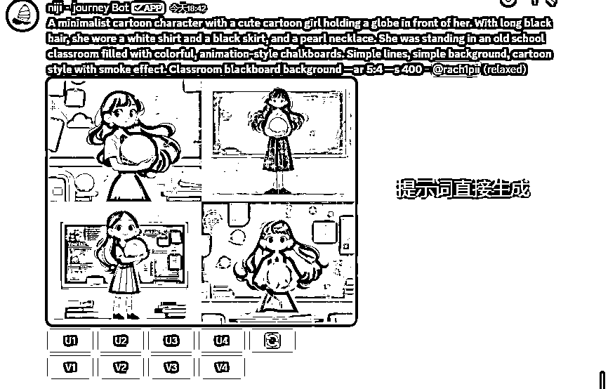
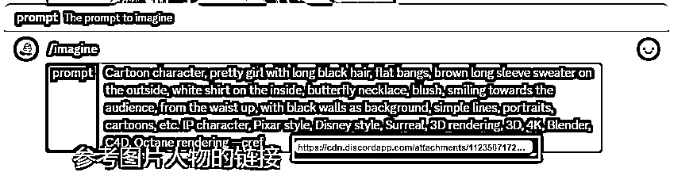
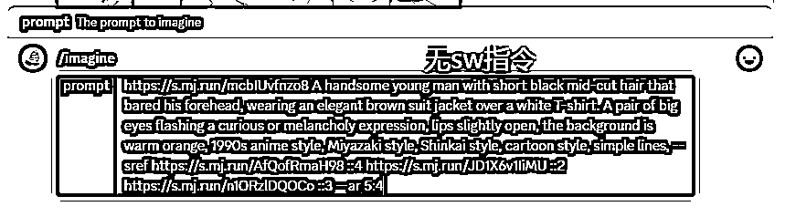
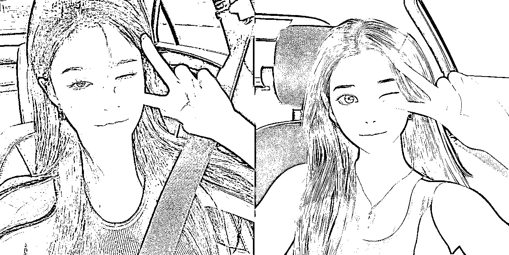
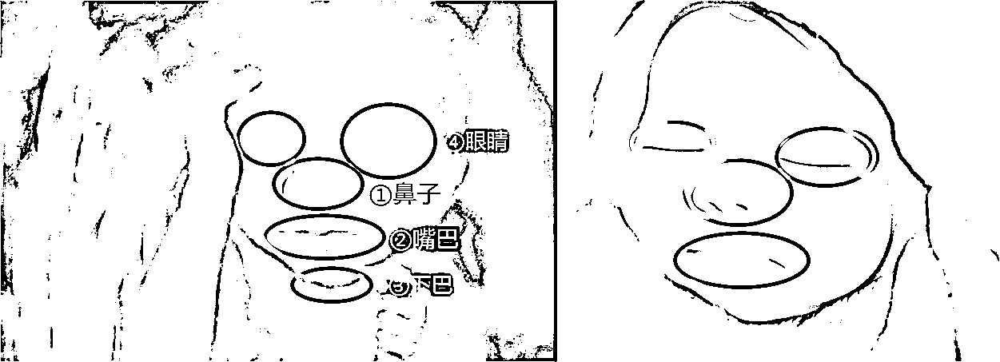
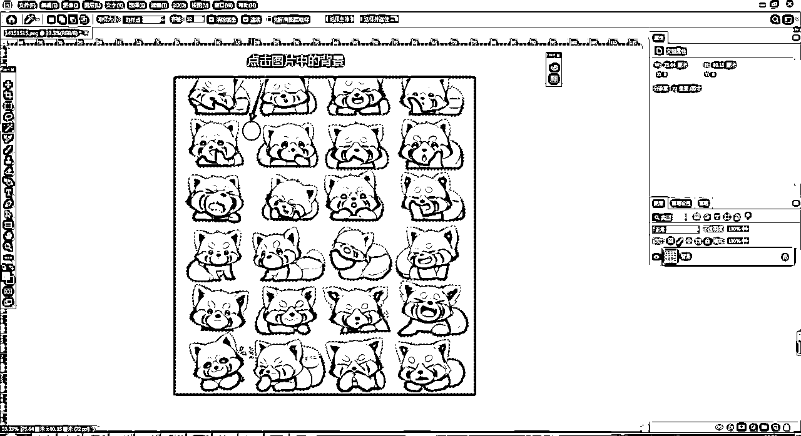

来源：https://gql7hsphkme.feishu.cn/docx/EMUadpJVVo14tYxKOVvcs5Zfn7b
欢迎大家观看专属钵仔的【Midjourney知识宝典进阶版】本宝典跟上一版的最大区别就是教你更加如何熟练的使用Midhoureny的指令来生成你要的图片和帮别人生成他想要的图片！认真看完实操下去，无需再为变现所烦恼！
创作不易！如果分享，转载商业或者其他，请告知并标注来源！！
注意：本文档适合已经明白基础的写词逻辑和已经学会上一篇基础文档的宝子。不建议新手和还没学会基础还没学好的宝子使用。因为在实战部分有很多地方都需要有一定的MJ基础才能看明白！
上一篇基础文档： （先学会这个在看进阶!!!!)
这个指令一般用在给用户定制头像或者你要指定画图风格的时候使用。例如最近很火简笔动漫风格职业头像。想要她的提示词不难，难得是她的图片画风的复刻。不过你会这个指令就很好办了

（需要切换到V6模型才能使用！v5是用不了的）

格式例如： --sref （图片链接）
先上传一张它这种风格的图片，然后自己加上自己的提示器，后面输入--sref 空格（加上这个图片的链接）即可！（ 不知道怎么获取链接图片链接的看上一篇教程的以图生图部分）
这里肯定会有人说你这个直接垫图画就好了呀！何必那么麻烦呢？为什么要这样画，我会在定制头像的部分给你讲明白！
这个指令主要是控制参考图片的风格参数范围。必须要跟上面的--sref 这个指令一起才能使用，不然单独使用是用不了
格式例如： --sref （图片链接） --sw （0-1000）范围程度。
这个参看范围程度一般都在500左右。你可以根据你自己的程度来写参考程度。如果不加sw指令，默认参考风格程度为100
这个方法令主要是用在你复刻别人的图片时，担心版权问题时用到。可以参考多个不同风格的图片来让你的生成出来的图片是具备独立原创风格
格式例如： --sref （图片一的链接） （图片二的链接） （图片三的链接）........
当然啦，如果你想要某个图片的风格多一点！可以在对应的图片链接后面加权重数值
格式例如： --sref （图片一的链接） ::5（图片二的链接） ::3 权重范围值（0.1~5）

这个也是可以垫图使用的，但这个垫图适合用来给用户定制的图片头像的时候使用
格式例如：源图链接+提示词 --sref （参考风格的链接）
这个指令一般用在给你画了一张很人物没有瑕疵，但背景和图片内其他元素不好的情况下使用！起到保持源图片人物一致只换背景和其他图片元素的作用！（如果是一些很细的细节还是用PS去吧）。这个也是需要V6模式下才能使用
格式例如： --cref （图片链接）


注意：这个功能更适合你用MJ创作出来的图片来作参考图片，如果用真人图片作为参考图的话可能会扭曲！（不过我测试下来，感觉还可以！特别是皮克斯风格还不错，但动漫风格就不太行了，这个可能跟的用风格有关吧！
当然啦，这个也是有控制参考程度的指令的！也是需要跟上面的--cref 这个指令一起才能使用，不然单独使用是用不了
格式例如： --cref （图片链接） --cw （0-100）范围程度。
注意：如果不使用这个cw 默认的参考值是100。
这个也是可以参考多个图片的人物五官的，使用用法跟上面的sref方法是一样的，我就不过多解释了
格式例如： --cref （图片一的链接） （图片二的链接） （图片三的链接）........
使用方法
格式例如：源图链接+提示词 --cref （参考风格的链接）
这个是可以跟上面的sref指令一起使用的，不但还原了指定风格，还把能把你喜欢图片人的五官画上去！
格式例如：--sref （参考风格的链接）--sw （参考风格范围） --cref （参考五官图片的链接） --cw （参考程度值）
官方说是可以制定自己的个性化模型，具体的我还没研究！
这个指令用于你确定你写的词画出满意图片后或者想一次多输出几组图片时使用，剩下按刷新按钮的时间（注意需要再快速时间下才能使用）
格式：提示词内容 --r 2（数值范围在2-40）--r 2=执行两次图片输出的操作
你发送后。MJ会给你发是否确实开始生成的请求，确认没问题就可以点yes开始生成
如果你对提示词不是很满意，但又想一次多生成几组看效果，就可以用Edit Template这个按钮来进行修改，按了之后会弹出一个修改框，选择你要修改的词即可
这个功能是看你要生成的图片数量来显示的，如果你想生成2次图片。你按这个按钮就会显示2组提示词，方便你检查它有没有错误的地方，导致你出图效果不一样！

这个指令生成的图片可用作重复图块，为织物、壁纸和纹理创建无缝图案。
格式：提示词内容 --tile
效果演示
很多用户都不想直接用自己真人图片当头像，但又想突出自己！所以就衍生出了真人漫改这项目，可之前真人漫改需要有一定的画画功底！但现在不用了只要会写词就可以了，AI就能帮你画！下面是我给一些用户漫改的图片展示（有部分元素是根据用户需求要加上去的，所以不是百分百还原。毕竟AI也不可能百分百还原图片！这一点切记）
下面我教一下大家怎么把真人图片变成动漫风格。需要准备一张动漫风格的图片，如果没有也没关系 可以用我下面的提示词模版里参考图也可以！
注意：漫改图片最好让用户提供图片五官清晰、没有水印和贴纸的图片给你漫改。不然以MJ的随机性啥都能给画出来！
我这里比较推荐使用Niji V6这个模型来给人漫改，不是因为MJ自带的niji的模型不好，而是Niji这个模型画的动漫风格比较好。看着更加动漫一点，脸部画的完整一些（个人感觉）。如果实在用这个模型画不出来了，可以尝试一下MJ自带的niji画看看
把用户提供需要漫改的图片，使用/describe指令，选择image，拉入用户图片按发送即可获取图片的基本提示词！
有基础提示词后，因为你不知道这里面的哪组提示词画出来是跟原图比较接近的。所以你需要把这4组提示词都让mj画一遍。拉到底部，选择imagine all这个按钮直接让mj把上面的4组提示词都画一遍！（需要切换快速时间模式）
效果图展示
这里第三组提示词生成出来的图片还不错，复制他的提示词到翻译网站上看看写的词！方便进行修改
只保留他图片主体的提示词，人物外观描写，衣服描写，表情描写，背景描写。
修改增加动漫风格提示词：20世纪90年代动漫风格，宫崎骏风格，新海诚画风，卡通画风，线条简单，（注意把前面的韩国人变成换成男人）
把写好的词放到MJ里，让它画出一张图看看效果！

看到画出来的图片大体跟用户图外观差不多了，就可以开始垫用户要漫改的图片来画了。垫图方法看上一篇文档的垫图篇
画出来基本已经还原的差不多了，就除了发型没有还原的比较好，发型这个用MJ都比较难还原。不过你也可以增加发型的提示词来看看还原效果。
不过一般问题不大！你可以先把图片发给用户看看他反馈。如果他不满意！你一定要询问他哪里不满意，要修改那部分内容？你再进行增加和修改提示词！我这用户他说画的的有点太写实了。所以这里使用风格参考的指令--sref来让图片更加动漫一点
这里参考的图片你可以直接用我AI提示词模版里的图片，也可以用你修改提示词后输出的第一组图片里的一张。（推荐使用提示词输出的第一组图片里的，比较接近用户原图的那一张图片）

效果图展示
还是有点写实。不过问题不大！再加一张风格图片设置权重即可！
效果图展示
如果不管怎么垫图都还是太写实，输入/settings 把风格程度降一档来输出！

再或者调低参考图片的程度值！也可以直接输入参考风格程度数值

最后一个方法：使用--q 指令控制图片风格程度 （这里控制值在0.1~5左右）
如果用户反映你画出来的图片当头像的大小太大，是因为我上面用的图片尺寸是5：4的。这样给用户定制好画一点！不过也不用担心。对用户选好的图片按这个按钮Make Square即可变成1：1大小的图片。
这样就选一张发给用户即可。
这个风格也是许多要定制头像用户选择的风格，这种风格会比动漫风格看着更加立体和还原度精度更高。下面是我给部分用户定制的图片展示（操作步骤跟上面的差不多，但有几步需要变化下）
这里风格模型看你自己选择！如果你需要脸部整体轮廓还原度高，但脸上五官需要那么还原的就选MJ nijiV6，如果你要脸上的五官还原度更高的就选Niji 6。这两者没有太大的区别！有时候就算用MJ的niji v6模型画也能画出脸上五官还原度高的图！主要看用户提供的给你画的图片可塑性。

如果你还不会自己写主体部分的提示词，可以直接按照上面的漫改的步骤来获取图片主体提示词，如果你已经会写主体提示词了，剩下的风格提示词直接复制我提示词模板里的皮克斯的风格提示词即可！
把上面写好的词，放到MJ里加上用户的真人图片去生成一张参考图片，为什么要垫用户的图上，而不是直接把词发给MJ生成？
因为皮克斯风格的发型部分是最难画的，就算你加了发型提示词，但如果你参考风格的图片里人物发型是卷起来的！会导致下面的效果，而且还有些细节还会画成反方向！
可以看到眼睛是左眼睁开右眼闭上的！手势也画反了。这里生成出来是画反的，还有因为参考图片风格里的人物发是卷发，导致生成出来的图片头发也是卷发。所以再来在生成一张参考图的时候需要垫上用户的真人图来画！
需要注意的是如果你发现垫图后生成效果已经很还原了是皮克斯风格，就不需要在用下面的步骤了。下面的步骤是生成出来的图片还不是皮克斯风格的使用
选择一张垫图后画出来跟用户源图相似度最高的图片和类似皮克斯风格的图片，作为风格参考图，
然后进行垫图+提示词+参考图片风格+图片尺寸大生成图片
效果图展示

效果还不错，但就如上面说的如果你垫用户图画出来的效果已经很还原就不需要用这一步了！（垫用户图+提示词画出来的效果对比）
MJ可以根据宝宝的四维彩超图片来预测未来宝宝样子的，但准确率说不准！有的能去到80% 有的只能到60%具体要看用户提供的四维图片来决定，这个赛道后期的变现方式很多。因为吸引的都是宝妈粉，宝妈粉购买力还是强的！下面是我给部分宝妈预测图片展示！
这个预测四维的模型推荐选择MJ的V5.1或者V5.2，这两者差别都不大。为什么不选v6呢！看了下面对比图就知道了，我就不多说了！（个人更推荐v5.1模型）
这里需要特别注意，如果用户提供的图片太过模糊，是AI不出来的准确的来说是预测不准！一定要让用户提供的能看见3/2正脸的图片，不然也是会影响预测准度。你要一直roll图。还有就是一定不要脸都看不到的图片。
直接复制我AI提示词模板里的词即可，如果你需要加一些风格背景词，你也可以自己上去。（注意在尾部加上--iw的指令,程度控制在1.2-1.5之间。太高会出现一些奇形怪状的纹理）
这个选成品图有点讲究，因为关系到跟四维图像不像，在你选择AI画出来的图片时！先从整体宝宝脸部五官开始看。鼻子→嘴巴→下巴→眼睛。还有如果画出来的图片是反方向的话，可以用ps或者美图秀秀把画好的图片翻转过来跟原图一样的方向。这样发给用户的时候好对比！

小窍门：其实就算你画的不是那么像画的话，只要你会说点好话用户基本都很开心，也会买单的！
特别注意的是：如果用户问你是男的是女生，不要告诉他，就算AI画出来的样子是女生。你也不要告诉用户。因为有相关法律法规是不能告诉宝妈孩子性别。
成品展示
在小红书里可以看到很多发自己用AI制作的表情包。变现方式也很直接挂到微信表情商城里别人打赏或者下载你就有钱赚！具体制作方法不难！跟着做基本能创作出一组表情包！
这里用来画表情包的模型没多大讲究，对我来说只要词写的好，基本都能画出符合要求的表情，下面是出图效果对比！

也可以用Niji这个机器人的6或者5来画。区别不大！
需要注意的是画表情包的随机性是很大的，不可能一次就画出你自己想要的。多roll才是王道
MJ的nijiv6和Niji 6都需要把表情包的词放在前面！不然生成效果就和上面的图片一样。
例如：A cute little boy emoji + Emoji sheet, Happy, sad, angry, expecting, laughing, disappointed, cute eyes, white background, illustrations, cute, emoji as illustration set, in thick comic line style, dynamic pose deep white, f/64 group, related characters
效果展示
当你选择好你需要的图片后，建议先把画出来的图片进行画质升级，不知道如何让画出来的图片进行画质升级的可以看上一篇宝典的画质提升部分内容！
如果选择图片还想要获得更多表情，可以按下面这几个按钮在原有的表情上扩展出新表情。
效果展示
把选择好的图片导入PS进行去背景，方便后面给图片进行加文字和统一色调！导入后先右边的图片是不是有一个锁，如果有的话点一下解锁，不然这一张图片是锁着的，是不能进行任何修改步骤的！
然后右键左边的快速选择工具，会弹出复选框，选择魔棒工具。
点击图片中的背景，即可选出图片中的动物。然后按键盘上的【Back】键也叫删除键，就能图片背景！

去玩背景的图片先不用，点击左上角的小房子。回到ps的主界面。然后点击左边的新建按钮，新建一个240*240的画布！
注意这里的画布背景颜色可以根据你自己的喜好来选择，创建后的画布颜色是改不了，但可以用创建一个矩形来进行覆盖！
创建后把已经把已经去好背景的表情包拉到新建的240*240的画布里面，把第一个表情调整大小。
如何把去好背景的表情拉到新建画布里演示视频
如果缩小到自己心仪的大小后，周围有露出其他表情的部分，可以选择右边的套索工具，右键切换到多边形套索工具。把表情框起来，按cert+j键抠出来。
抠出来后多出来一个图层，这个是你刚刚框起来的那个表情的图片，然后选择隐藏下面的图层即可得出一个周围是空白的表情。
有了周围的空隙后，选择右边的添加文字，添加符合这个表情的文字即可
注意：这里的文字尽量现在免费能商用的字体，避免后面遇到版权问题！我这也准备了33个免费的字体。放在下面了，有需要的宝子可以去下面领取。
添加完字体后的成品
按照同样步骤把剩下的7个表情做出来并导出！制作多少个表情看自己需求，最少要8个。因为上传表情包最少要上传8个才可以！

把制作好的表情包上传到微信表情包商城：
https://sticker.weixin.qq.com/cgi-bin/mmemoticonwebnode-bin/pages/stickerPage/detail
点击提交作品——表情专辑，根据要求上传自己刚做好的表情即可

版权信息就写自己的ip名字或者登录账号的名字也可以！剩下的横幅，封面和图标只需要在ps里新建一个他要求比例的画布把表情放上去即可
剩下的信息根据自己做的表情类型来填写即可。填写完后提交即可！关于版权问题如果你用的是明星或者企业家要上传版权证明，如果是其他的可以选择不填！
链接：https://pan.baidu.com/s/16YdAY0eKNz7E1YJsJAScsQ?pwd=1234
提取码：1234
打开电脑的控制面板，直接搜索就能看见了。
找到名为字体的文件夹打开，把刚刚上面下载的字体拉进去就可以了。
汇总了多个类别的提示词。一共3000+AI提示词
https://docs.qq.com/sheet/DWmFHa2xvcE5ZR1Bw?tab=yc8we6
汇总了多个平常我经常使用的提示词模板，可根据自身需求来使用
https://docs.qq.com/sheet/DWnpDb2VqQUFFRlZt?tab=BB08J2
汇总了所有Adobe软件的下载。根据自己电脑的配置来进行下载即可
https://www.yuque.com/books/share/0a375170-2bf9-460b-b0e2-a34134e384c1
可以消除图片背景
https://www.remove.bg/zh